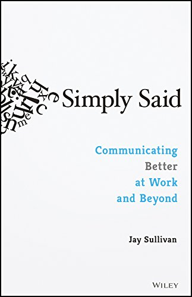
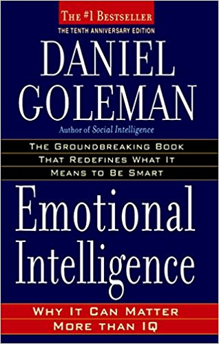

| Simply Said: Communicating Better at Work and Beyond | ||
|---|---|---|
| Author: | Jay Sullivan |  |
| Publisher: | Wiley | |
| Edition: | 1st edition | |
| E-Book: | Download E-Book | |
| The Hard Truth About Soft Skills | ||
|---|---|---|
| Author: | Peggy Klaus | |
| Publisher: | Harper Business | |
| Edition: | 1st edition | |
| E-Book: | Download E-Book | |
| Emotional Intelligence: Why It Can Matter More Than IQ | ||
|---|---|---|
| Author: | Daniel Goleman |  |
| Publisher: | Bantam Books | |
| Edition: | 10th edition | |
| E-Book: | Download E-Book | |